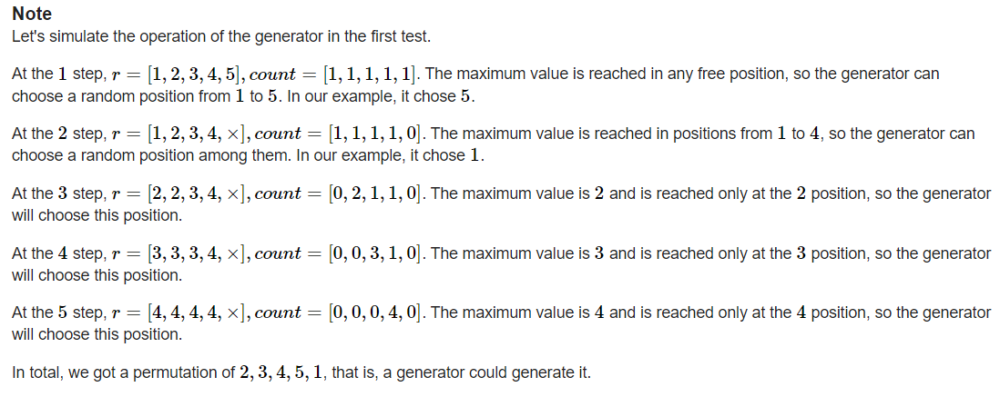
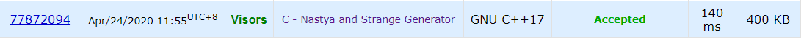

Codeforces Round 637 Div.2
碎碎念
终于上分了真的，感觉可以冲到一两千名的（C代码出的时候提交还不多），结果C沉了，最终只有六千名。毕竟这次手稍微快hhh。本来以为我C的代码够简洁了，没想到正解好像更简洁……
这次真的是非常遗憾，C和D都接近想到正解，却没有最终AC。另外吐槽一下本场的题面，是真的难读……不过题目质量还是在线的。
解题报告
C - Nastya and Strange Generator
C的题目很难读，直接把LYH读崩了，所以这里我先简要翻译一下。
本题需要我们按照规则检查题目给出的排列能否被生成。开始时排列$p$为空，然后我们按照以下规则依次将$1\sim n$填入排列，一开始$i=1$：
- 计算$r$数组，$r[j]=min(t\in [j,n])$，其中$p[t]~is~empty$即没有被填过，如果不存在这样一个$j$，我们可以用$0$之类的特殊数表示
- 计算$count$数组，$count[j]$为$r[]$中$j$的数目
- $count$数组中值最大的下标为$i$的可放置点
- 将$i$放入排列，$i++$，转到1.，直到$n$个数被填完
根据这个规则，再结合样例解释，就能够理解了：

如果暴力，显然$O(n^2)$超时，这两个$n$分别是枚举每位数的时间和检查每个数能不能填的时间。我们可以考虑优化其中之一，枚举每位数显然很难优化，就看能否优化检查每个数的时间，只要降到$O(logn)$以下，本题就可解决。
于是乎我们可以研究一下$r$和$count$的生成方法，很容易发现这两个数组在填$i$和$i+1$时是有一定的转移规律的。然后我想到的规律是：
- 上一个数填在最右边，那么前面的$r$数组不会受影响，进而$count$数组也不会受影响，所以当前数可以填在任意空余位置。
- 上一个数不在最右边，那么它只会直接影响它自己的$r$，使得其对应下标$r$变为其右边没填的最近的位置，进而打破$count$数组的平衡，使那个位置的count突然比别的多，这时候这个数必须填在那。
/**
* @Project Codeforces_Round__637__Div__2_
* @Filename Nastya_and_Strange_Generator
* @Author Visors
* @Date 2020/4/23 23:56
* @Version 1.0
* @Description TODO
**/
#include <iostream>
#include <cstring>
using namespace std;
const int N = 1e5 + 5;
int T, n;
int pos[N];
bool book[N];
int main() {
ios::sync_with_stdio(false);
cin.tie(0);
cin >> T;
while (T--) {
memset(book, 0, sizeof(book));
cin >> n;
for (int i = 1, t; i <= n; i++) {
cin >> t;
pos[t] = i;
}
int r = n;
bool flag = true;
book[pos[1]] = true;
for (int i = 2; i <= n; i++) {
if (pos[i - 1] != r) {
int tmp = pos[i - 1];
while (book[tmp]) tmp++;
if (tmp != pos[i]) {
flag = false;
break;
} else book[tmp] = true;
}
if (pos[i - 1] == r) {
book[pos[i]] = true;
r--;
}
}
if (flag) cout << "Yes" << endl;
else cout << "No" << endl;
}
return 0;
}
但是在第二个测试点错了，希望有读者能帮我指出一下问题在哪里。
正解是判断有没有$p[i]-p[i-1]>1$，如果有那么不能生成。感觉跟我的比较像，不知道差异点是在哪里……
/*
* @Filename Nastya_and_Strange_Generator.cpp
* @Author Visors
* @Date 2020/4/24 11:07
* @Version 1.0
* @Description TODO
**/
#include <iostream>
#include <vector>
using namespace std;
int T, n;
vector<int> p;
int main() {
ios::sync_with_stdio(false);
cin.tie(0);
cin >> T;
while (T--) {
cin >> n;
p = vector<int>(n);
cin >> p[0];
bool flag = true;
for (int i = 1; i < n; i++) {
cin >> p[i];
if (p[i] - p[i - 1] > 1) flag = false;
}
if (flag) cout << "Yes" << endl;
else cout << "No" << endl;
}
return 0;
}

to be continue……